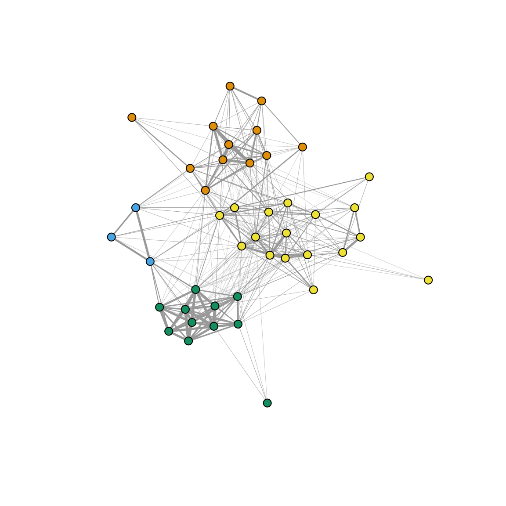

Here are the packages you will need to load for this exercise:
library(tidyr) #or you can just load the whole tidyverse with library(tidyverse)
library(asnipe)
library(igraph)It’s one thing to learn the basics the theory, but it’s a whole other thing to learn how to actually go from observed data to a network. Here is an exercise designed to get you from real data to networks.
flockdat=read.csv('https://datadryad.org/bitstream/handle/10255/dryad.63925/Flock_Season2_Dryad.csv')birdcols=grep("Bird",colnames(flockdat))
bird.ids=unique(gather(flockdat[,birdcols])$value)
bird.ids=bird.ids[is.na(bird.ids)==F]
bird.ids## [1] 23734 23773 23778 23732 23809 23774 23862 7615 7636 7638 23891
## [12] 23772 23777 7627 7635 23854 7632 23781 23762 7608 23815 23726
## [23] 23978 7623 23761 23770 7612 7614 7619 7640 23769 23853 7609
## [34] 23771 7633 7606 23819 7637 23831 23735 7620 23780 7641 23758
## [45] 7630 7661 7617m1=apply(flockdat[,birdcols], 1, function(x) match(bird.ids,x))
m1[is.na(m1)]=0
m1[m1>0]=1
#m1
row.names(m1)=bird.ids
rowSums(m1)## 23734 23773 23778 23732 23809 23774 23862 7615 7636 7638 23891 23772
## 18 37 25 25 21 35 48 36 9 5 20 29
## 23777 7627 7635 23854 7632 23781 23762 7608 23815 23726 23978 7623
## 25 36 25 22 21 6 17 15 37 20 10 6
## 23761 23770 7612 7614 7619 7640 23769 23853 7609 23771 7633 7606
## 9 21 15 14 9 14 10 20 24 11 8 28
## 23819 7637 23831 23735 7620 23780 7641 23758 7630 7661 7617
## 3 3 24 3 1 4 1 6 3 2 1m2=m1[which(rowSums(m1)>2),]
adj=get_network(t(m2), data_format="GBI","SRI")## Generating 43 x 43 matrixg=graph_from_adjacency_matrix(adj, "undirected", weighted=T)
#plot(g, edge.width=E(g)$weight*10, vertex.label="", vertex.size=5)
com=cluster_louvain(g)plot(g, edge.width=E(g)$weight*10, vertex.label="", vertex.size=5, vertex.color=membership(com))